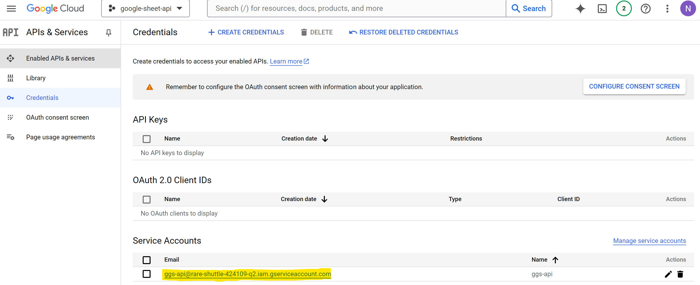

from pathlib import Path
from oauth2client.service_account import ServiceAccountCredentials
import gspread
def gg_authentication(
google_key_file: Path
):
scope = 'https://spreadsheets.google.com/feeds'
credentials = ServiceAccountCredentials.from_json_keyfile_name(
google_key_file, scope
)
gc = gspread.authorize(credentials)
authenticate = {'gc': gc, 'credentials': credentials}
return authenticateA step-by-step guide to connect your google sheet with Python. You will need to:
1. Create your Google Developer Credentials
2. Grant access of the credential you just created to your working google sheet
3. Connect to the sheet using Python
Create Google Developer Credentials
Sign in Google Cloud Console. Once you are in, on the top next to search box, you can see a small button My First Project with an arrow down
Click on the button and it will open a small window. At the top left, select New Project
Now enter your Project name. We can use one project for all Python connections instead of creating a new one for every project so I named mine google-sheet-api. You can also rename the project ID if you like
After hit Create it will load you to home screen. At the top bar now select the project that you just created
Now you are working in the project you created. Under Quick access chooe APIs & Service
If you have not enabled APIs, there will be a button Enable APIs and Services suggested on the screen. Click on the button
Now you are in your API Library, type google sheet api in the search box
It will show Google sheets API, click Enable. This api allows you to write and read google sheet
Now you are directed to a monitoring board of your project. On the left side choose Credentials
Now click Create credentials
Depends on the type of data, platform, and access methodology choose access credential that is right for you. In this case i choose Service account
Fill Service account name and Service account ID then click Done
Now you are directed to your Credentials board

At Service Accounts there is new account that you just created. Click on the account and choose Key to create new key

Choose .json and then hit Create
Grant access of the credential to your working sheet
Now the json file is created and saved in your computer. You will want to check your folder Downloads and will find it there
That .json contains your api type. When open it you can easily find your client_email
Now open your working Google sheet, at Share button grant that email to be Editor
Now you are able to use python and call api to the sheet you want to work with
Connect to the sheet using Python
Create function to authorize the google api with the json file. You need to install
- oauth2client
- df2gspread
in order to authenticate the connection and read/write google sheet
Create function to read from google sheet
import pandas as pd
import oauth2client
from df2gspread import gspread2df as g2d
def read_ggs(
credentials: oauth2client.service_account.ServiceAccountCredentials,
google_sheet_id: str,
wks_name: str,
) -> pd.DataFrame:
data = g2d.download(
google_sheet_id,
wks_name,
col_names=True,
row_names=False,
credentials=credentials,
)
return dataIn the google sheet link, you can easily find the sheet ID.
The format is https://docs.google.com/spreadsheets/d/ + sheet_id + /edit#gid=0
Let’s try to read US house price google sheet
from pyprojroot import here
google_sheet_id = '1DtbVGLPklK5itHgw4c9BD1HBZo05-bYf5dXzuFirF28'
wks_name = 'https://www.properstar.com/united-states/house-price'
path = './keys/secret_key.json' # path to your credential file
gg_auth = gg_authentication(here(path))
data = read_ggs(
gg_auth['credentials'],
google_sheet_id,
wks_name
)
data.head()| Location | Price per m² – apartments | Price per m² – houses | |
|---|---|---|---|
| 0 | Florida | $4,350/m²-2% | $2,769/m² |
| 1 | California | $7,373/m² | $6,613/m²+3% |
| 2 | New York | $13,931/m² | $4,449/m² |
| 3 | Texas | $3,683/m²+1% | $2,254/m²+1% |
| 4 | Washington | $6,203/m² | $3,917/m²+3% |
Now you are able to connect Python to your Google sheet.